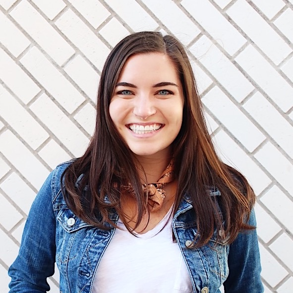

About Me

Hello! My name is Carmen Collins. I am 25 years old and live in Austin, TX. I graduated from The University of Texas at Austin in 2015 with a degree in Public Relations. Since then, I've been working as an event planner and creative freelancer. I've worked on some pretty fun projects over the past few years, but now I'm ready for a challenge and a change in my career.
So I decided to enroll in the Coding Boot Camp where I hope to improve my coding skills and get a new job in the tech industry. I would love to be able to design cool websites and apps for creative businesses and entrepreneurs. I am more interested in the visual side of web development, but am looking forward to understanding both the front-end and back-end technology.
Outside of school and work, I like to hike with my goldendoodle Paddington. We love walking around the trail downtown or taking a trip to the Greenbelt. I also love trying out new restaurants in town. My favorite restaurants in Austin are The Peached Tortilla and Matt's El Rancho. I also enjoy working on art projects, from drawing and graphic design to painting and making collages.